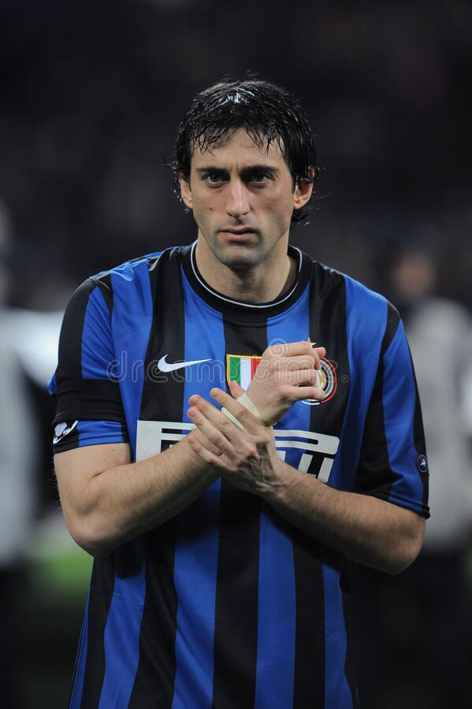

Top 2
Diego Milito
Biografia
Nació el 12 de junio de 1979 en Bernal, Quilmes, provincia de Buenos Aires. Es el hermano mayor de Gabriel Milito, compañeros en la selección Argentina de fútbol. Trayectoria Es un delantero con buen manejo, puede desempeñarse como centrodelantero como también de segundo delantero. Su mayor fortaleza es el freno, una vez que lo ejecuta en carrera es letal. Tiene una gran habilidad en el uno para uno en carrera. Se trata de un jugador muy completo. Sus mayores fuertes son su capacidad de definición en el remate a gol (sus números le avalan), su recorte para amagar a la defensa y su habilidad para retener el balón tanto de espaldas a la portería, como para buscar la asistencia al compañero. Es un jugador veloz tanto en carrera como con el balón en los pies, y en el juego aéreo, aunque no es su fuerte, se defiende con soltura. Debutó con Racing Club en 1999, ante Unión de Santa Fe (3-3). Llegó a ser campeón nacional con Racing Club, luego de 35 años de espera en 2001. Fichó por el Genoa FC en 2004.
Diego Milito
Diego Milito es de mis jugadores favoritos por su forma de jugar, y por los goles importantes que metio en las tres finales para ganar el triplete en el 2010, primero en liga marco el gol del gane para llevarse la liga, luego en la copa de italia igual metio gol y al final en la champions league metio doblete para consagrarse como campeon de Europa aparte de eso fue elegido como mejor jugador y mejor delantero de ese año de la UEFA
Biografia
Lautaro Javier Martínez Gutiérrez (Bahía Blanca, interior de la Provincia de Buenos Aires; 22 de agosto de 1997) es un futbolista argentino. Juega como delantero en el Inter de Milán de la Serie A de Italia y en la selección Argentina de fútbol. Iniciaría su carrera en su natal Argentina, debutando profesionalmente en 2015 con Racing Club. Permanecería cuatro temporadas en el equipo y llegaría a representarle en liga y Copa Libertadores, totalizando 27 goles en 62 partidos antes de unirse al Inter de Milán a cambio de 27 millones de euros en 2018.4 También representó a Argentina en diversos niveles juveniles, llegando a competir en el Campeonato Sudamericano de Fútbol Sub-20 de 2017 y en la Copa Mundial de Fútbol Sub-20 de 2017. Realizaría su debut absoluto en 2018 y sería parte de los equipos partícipe de las Copa América 2019 y 2021, logrando el tercer lugar en la primera y el título en la segunda, además de la Copa de Campeones Conmebol-UEFA (ex Copa Artemio Franchi), donde sería figura.
Lautaro Martinez
Lautaro es mi jugador favorito del momento, me gusta mucho como controla el balon y como mete sus goles, aparte de ser muy habilidoso con el balon es un muy buen rematador, es lo que mas me gusta de Lautaro, aparte de su celebracion
Investigacion sobre Lautaro y Diego
Lautaro y DiegoLos dos son mis jugadores favoritos es dificil quedarse con uno porque me gusta como juegan los dos, aunque Milito ya se haya retirado sus estadisticas fueron abismales por eso voy a poner un poco de sus goles primero los de Milito Goles en clubes: 256 (616 PJ) y ahora los de Lautaro 2022-2023
| Goles lautaro en racing y en el Inter |
| 5O goles |
| 76 goles |
| Goles Milito en el Racing y en el Inter |
| 37 goles |
| 79 goles |